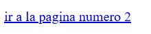
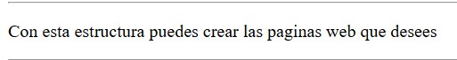
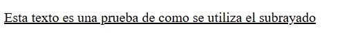
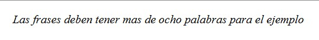
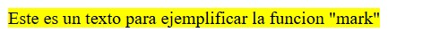
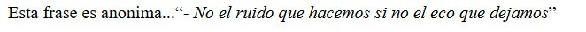
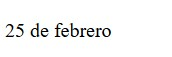
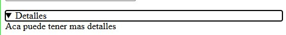

| NUMERO DE ETIQUETA |
NOMBRE DE ETIQUETA |
SINTAXIS |
DESCRIPCION DE USO |
EJEMPLO DE USO |
ATRIBUTOS COMUNES |
IMAGEN |
ENLACE |
| 1 |
<a> |
<a href=""></a> |
crea un enlace a otras páginas de internet, archivos o ubicaciones dentro de la misma página, direcciones de correo, o cualquier otra URL. |
< href="PAGINA2.html"><ir a la pagina dos/a>
download, href, hreflang, |
 |
Pagina para "a" |
| 2 |
<footer> |
<footer></footer> |
representa un pie de página para el contenido de sección más cercano o el elemento. |
<footer><<p><tag footer para el ejmplo/</p></footer> |
download, href, hreflang, |
 |
https://developer.mozilla.org/es/docs/Web/HTML/Element/footer |
| 3 |
<p> |
<p></p> |
El elemento p (párrafo) es el apropiado para distribuir el texto en párrafos. |
<p>Est es un parrafo de pueba</p> |
download, href, hreflang, |
 |
https://developer.mozilla.org/es/docs/Web/HTML/Element/p |
| 4 |
<u> |
<u></u> |
Muestra el texto subrayado. |
<p><u>Este es un parrafo de pueba</u></p> |
title, style, id, class, dir, lang |
 |
https://developer.mozilla.org/es/docs/Web/HTML/Element/u#muestra_el_texto_subrayado. |
| 5 |
<i> |
<i></i> |
Muestra el texto marcado con un estilo en cursiva o italica. |
<p><i>las frases de ejemplo son estas</i></p> |
title, style, id, class, dir, lang |
 |
https://developer.mozilla.org/es/docs/Web/HTML/Element/i |
| 6 |
<mark> |
<makr></mark> |
representa un texto marcado o resaltado como referencia o anotación, debido a su relevancia o importancia en un contexto particular |
<p><mark>la frase para subrayar es esta</mark></p> |
Este elemento no tiene atributos que no sean los atributos globales, comunes a todos los elementos. |
 |
https://developer.mozilla.org/es/docs/Web/HTML/Element/mark |
| 7 |
<q> |
<q></q> |
indica que el texto adjunto es una cita corta en línea. |
<p><q>la frase debe estar entre comillas</q></p> |
Este elemento incluye los atributos globales |
 |
https://developer.mozilla.org/es/docs/Web/HTML/Element/q |
| 8 |
<time> |
<time datetime=""></time> |
representa un periodo específico en el tiempo |
<p><time>"2025-02-25"=febrero 25</time></p> |
Este elemento incluye los atributos globales |
 |
https://developer.mozilla.org/es/docs/Web/HTML/Element/time |
| 9 |
<button> |
<button></button> |
representa un elemento cliqueable de tipo botón que puede ser utilizado en formularios o en cualquier parte de la página que necesite un botón estándar y simple de aplicar. |
<p><button>este texto contiene la etiqueta "button"</button></p> |
title,class,style,disabled,reserved |
 |
https://developer.mozilla.org/es/docs/Web/HTML/Element/button |
| 10 |
<details> |
<details></details> |
es usado como un widget de revelación a través del cual el usuario puede obtener información adicional. |
<p><details>despliega un menu</details></p> |
Este elemento incluye los atributos globales. |
 |
https://developer.mozilla.org/es/docs/Web/HTML/Element/details |